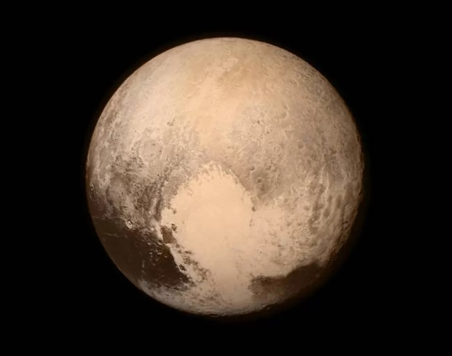

Plutão é um planeta anão que orbita nosso sistema solar. Ele está localizado em uma região desse sistema chamada Cinturão de Kuiper, uma área muito distante do Sol e, portanto, a influência dessa estrelinha é muito pequena. A descoberta foi feita em 1930 pelo astrônomo americano Clyde Tombaugh, e o nome foi escolhido por uma garotinha de 11 anos em referência ao deus romano do submundo. Até 2006, a associação Astronômica Internacional considerava Plutão o nono planeta do sistema solar e, embora estivesse muito próximo dos chamados gigantes gasosos (Júpiter, Saturno, Urano e Neptuno), era um dos menores planetas do nosso sistema. No entanto, após o descobrimento do planeta anão Eris e a visão (agora considerada falsa) de que era maior que Plutão, começaram a emergir dúvidas sobre se Plutão poder realmente ser classificado como um planeta.
"Consequentemente, após uma convenção realizada naquele ano, os critérios necessários para definir o que é ou não é um planeta foram estabelecidos e reconsiderados, de modo que Plutão falhou em um deles, a saber: ter uma órbita não diretamente influenciada em outros planetas. Consequentemente, foi "rebaixado" à categoria de planeta anão. Informações de fundo também mostram que o ano de Plutão consiste em 248 anos terrestres, uma vez que leva mais tempo para fazer uma revolução completa ao redor do Sol. Sua velocidade de rotação também é mais lenta, os dias são 6,5 vezes mais longos que os nossos, embora o planeta seja muito menor. No entanto, como muito pouco se sabia sobre o corpo celeste em questão -devido à sua grande distância da Terra-, a NASA (Agência Espacial Norte-Americana) enviou a sonda New Horizons, que fez uma boa aproximação em julho de 2015 e assim pôde imagens precisos. Além disso, foram capturadas imagens e vídeos da superfície e da atmosfera da região revelando muitas informações (às vezes surpreendentes). A primeira das descobertas sobre Plutão pela sonda New Horizons foi feita muito antes de se aproximar do planeta anão: a existência de mais luas do que se pensava anteriormente. Quando a sonda deixou a terra em 2005, pensava-se que havia três: Caronte (o maior), Nix e Hidra. No entanto, à medida que nos aproximamos, mais dois foram descobertos. Styx (2011) e Cerbero (2012).

Outra importante informação sobre as características de Plutão foi a atualização de seu tamanho, que é um pouco maior do que se calculava, o que se deve às distorções ocasionadas na obtenção de imagens a uma maior distância. Assim, o seu diâmetro exato é de 2370 km, colocando-o na liderança em termos de tamanho entre os planetas anões, com 30 km a mais em relação a Éris, o segundo colocado. Com as imagens obtidas pela New Horizons, também se verificou que Plutão possui um relevo bastante acidentado, marcado pela presença de um grande número de cadeias montanhosas. Ao contrário do que se imaginava, há poucas formações em crateras em sua superfície, o que indica uma idade geologicamente jovem. A superfície provavelmente foi muito modelada por erupções vulcânicas e outros eventos naturais ao longo dos últimos 100 milhões de anos. Plutão possui uma atmosfera composta por metano, monóxido de carbono, nitrogênio e outros materiais, além de ter uma grande quantidade de gelo em sua superfície. Nas baixas temperaturas locais (cerca de -248ºC), esse gelo apresenta o mesmo comportamento natural de uma rocha aqui da Terra, sendo a base estruturante das montanhas acima descritas. Ao longo dos próximos anos, novas e instigantes informações sobre o planeta anão mais popular entre os seres humanos serão reveladas pela NASA, o que ocorre à medida que a sonda enviar mais do grande volume de informações armazenado. Com isso, será possível obter conclusões mais definitivas sobre a atmosfera local, a atividade geológica e outras características de Plutão e suas luas.
Planetas anões
Reconhecemos 5 planetas anões em nosso Sistema Solar